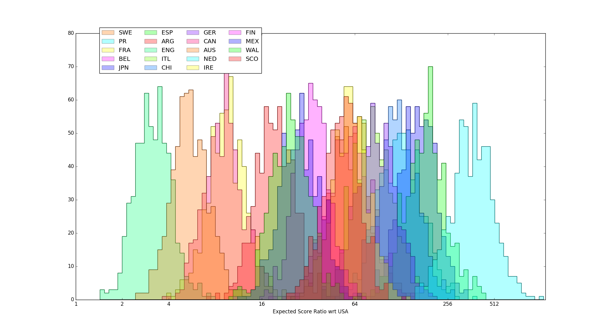
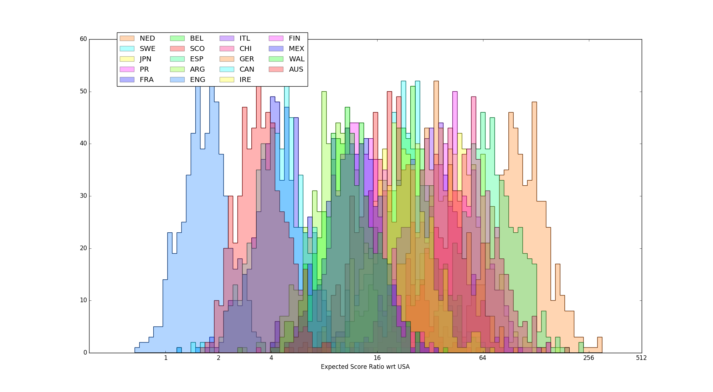
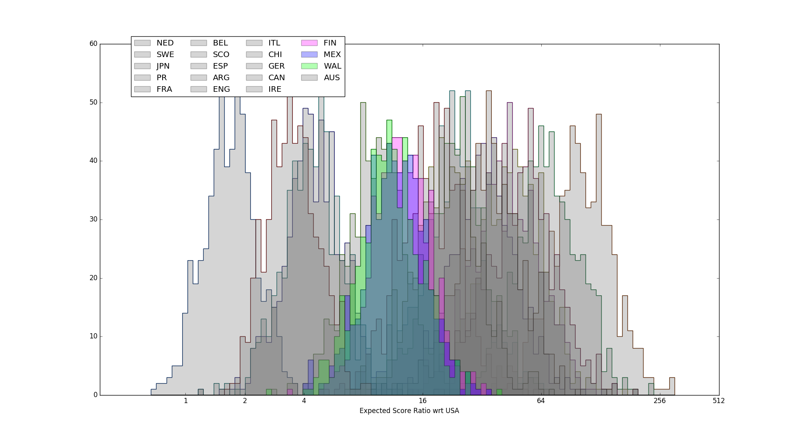
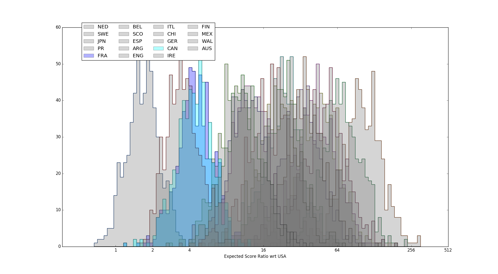

MRDWC2016 - Rankings and Statistics
As regular readers know, we've been regularly performing statistical analyses of Roller Derby for 2 years now. One of the first things we did was a comparison of the rankings obtained at the 2014 Blood and Thunder World Cup with the inferred actual strengths of the teams present (as determined from the scores they achieved against other teams in the contest). We also performed a similar analysis against the first Men's Roller Derby World Cup, also in 2014.
At the time, we noted that MRDWC 2014 did rather better than B&TWC2014, but that it was also much easier to run a tournament with good "true" rankings if you had less teams present. The more teams you have, the more important seeding and tournament structure is in determining how close your final rankings are to the true orderings of team strength.
Men's Roller Derby World Cup 2016 has just completed, and it had rather more competitors than the first one (20, to the original's 15). This time, the teams were arranged in groups, carefully structured so that each group had 1 seed from the Top 4 of the 2014 MRDWC, 1 seed from the remaining Top 8, and the remaining 3 slots with teams from the bottom 7 from MRDC2014, or unseeded teams new to the tournament.
This seeding system, assuming that teams were roughly ordered in performance similarly to 2014 (and that no unseeded teams were better than the old Top 8) was designed to reduce the probability of poor rankings for teams in the tournament, whilst still allowing for the favoured "group playoffs + single-elimination tournament and consolation tournaments" structure.
So, how did they do?
Although we no longer seriously use frequentist approaches to estimate team strength (as they're not capable of estimating the confidence range of the resulting estimates well, and have well-established deficiencies compared to Bayesian methods for these tasks), we will start with the (frequentist) Massey rankings for the teams, for comparison with the previous article. The table below shows Massey rankings (and calculated power) based on both Score Difference and Score Ratio, compared to the MRDWC official tournament placements. For both rankings, we've also calculated the rankings if you remove blowout bouts (defined here as bouts where the winner scored more than 10 times the loser), as blowouts particularly skew Ratio based rankings (as a single extra point scored by the loser can affect the ratio by a significant amount). We have bolded the teams where positions have changed, relative to the Official Ranking.
| All | No Blowouts (10%) | |||
| MRDWC Official Ranking | Rank with respect to Score Difference | Rank with respect to Score Ratio | Rank with respect to Score Difference | Rank with respect to Score Ratio |
|
|
|
|
|
Since the previous World Cup article, we've developed the theory of our statistical approaches somewhat, and now use Bayesian inference techniques to estimate the underlying strength of teams. (For example, see our examination of the European Smackdown).
We took the full set of bouts from MRDWC 2016 and performed a Bayesian Monte-Carlo inference on them, to determine the estimated strengths of each team, relative to the top-ranked team, Team USA. As we are using Score Ratio here as our ranking mechanism, we also performed the same inference on the set of bouts with blowouts (>1:10 ratio) removed.
 Fig 1 - full set of estimated strength distributions, calculated with respect to estimated score ratio against Team USA
 Fig 2 - full set of estimated strength distributions, calculated with respect to estimated score ratio against Team USA, excluding bouts with blowouts (1:10 ratio)
It should be easy to see that, whilst removing blowouts does cause some global compression of the distributions (generally making the difference between the USA and everyone else look a bit smaller), there's a general maintenance of the relative features within the two results. The ordering of the results is the same as that for the Massey rankings derived from score ratios, although the precise values differ slightly (by less than 10% in all cases, and mostly less than 2%).
In particular, England, Australia, Canada and France are clearly in a class of their own at the top of the distribution (with England clearly separate from the other 3 as well), and Netherlands are clearly separate at the bottom end.
| [gallery ids="8507,8508" type="rectangular"] |
| Fig 3: England and Australia highlighted in the results above. |
 Fig 4: Netherlands distribution of score ratios, in the case where blowouts are excluded.
Fig 4: Netherlands distribution of score ratios, in the case where blowouts are excluded.
As can be seen, there are actually relatively few points of disagreement between the MRDWC rankings and the true ordering of team ability. There are even fewer if we eliminate statistically insignificant differences (for example, Sweden, Belgium and Ireland are statistically identical in strength, so any permutation of their ordering is a valid one).
 Mexico, Wales, Finland highlighted
The first placement error we see is Mexico. Narrowly missing out on the second group place in Group Green to Wales, the highest rank that Mexico could attain in the tournament stage was 9th, which they happily took. In fact, Mexico's predicted strength is (narrowly) higher than that of Finland, who placed bottom of the Top 8 teams, qualifying via the second spot in Group Red. This results in a small placement error of just one position, as a result of the tournament structure (and the fact that Mexico is actually stronger than a seeded team). [Mexico does much better when ranked with score difference, as their bout against Canada was particularly low scoring, thanks to exceptional Mexican defence.]
Ironically, Mexico was originally in Group Red with Finland, only being moved to replace Colombia when they pulled out from the tournament only two weeks before. If they had remained in Group Red, they would likely have taken the second qualifier place, and attained that 8th place (while Finland would have taken 9th). In that instance, however, Scotland would have been significantly unfairly penalised for their group, being unable to attain the 10th place position that they did.
 Japan, Puerto Rico, Chile highlighted (no-blowouts case)
Japan, Puerto Rico, Chile highlighted (no-blowouts case)
Further down, the only other significant placement error concerns Puerto Rico, Japan and Chile. Coming 4th in their Group, Puerto Rico qualified for the 13th to 16th place tournament, where they placed 16th. The 5th Group place in their Group, Blue, was taken by Netherlands, the lowest-placed team in the tournament - literally every other team in the tournament was assured at least 4th place in that Group.
In fact, Puerto Rico's estimated true strength is statistically equivalent to that of Japan or Chile, who finished last in their group, and therefore were limited to a maximum final placement of 17th. (Complicating matters is that the team with which PR are statistically tied depends on if we include blow-outs or not - including that no-score game against USA pushes Japan's strength low enough that they look worse than Chile and PR, but this is probably unfair to Japan.)
Coming back to the statistically tied teams:
Team France will be cheered, perhaps, to note that their estimated strength is statistically inseparable from that of 4th place Team Canada. The France/Canada game was particularly closely contested in the first period, with Canada only managing a convincing win thanks to a much better second. [Indeed, when ranked on Score Difference, France look stronger than Canada, to a low significance, thanks to that low-scoring CAN/MEX game.]
 France, Canada highlighted, showing statistical inseparability.
Our second set of statistically tied competitors are Sweden, Belgium and Ireland. While Belgium and Sweden played a close game, to Sweden's advantage, on Day 4, Ireland never played the other two - we'd suggest that such bouts would be worth organising!
Following them, Germany and Italy are also statistically inseparable, as are Puerto Rico and Chile (mentioned above).
If we consider statistically tied teams to have the same rank, then all of this means that our rankings for MRDWC would be (bold indicates disagreement with MRDWC, colours that there's a statistical tie with all teams of that colour and MRDWC's result might change if you ran it again):
| 1. USA 2. ENG 3. AUS 4= CAN 4= FRA 6. ARG 7. WAL 8. MEX 9. FIN 10. SCO 11= IRE 11= SWE 11= BEL 14= ITL 14= GER 16= PR 16= JPN 16= CHI 19. ESP 20. NED |
Overall, MRDWC 2016 did particularly well for a "Groups+Single-elimination" style tournament of its size, with only ~2 significant placement errors, by only 1 or 2 ranks. Some of this is due to luck in the number of statistically-tied teams, but the construction of the seeded groups was clearly helpful in eliminating large-scale disparities - one of the two placement errors was specifically due to an unexpectedly high rank from an unseeded team. We hope that future tournaments will bear this in mind, if they decide to use a "Groups+Single-elimination" structure.
(This blog still favours Swiss-system tournaments, at least in place of Group stages; such a system would have eliminated both placement errors in this case, at the cost of a less easily read schedule on the second half of the first day, and much of the second.)
As always, these analyses are based on code available at our GitHub repository. (Some tweaking of filenames may be needed.)